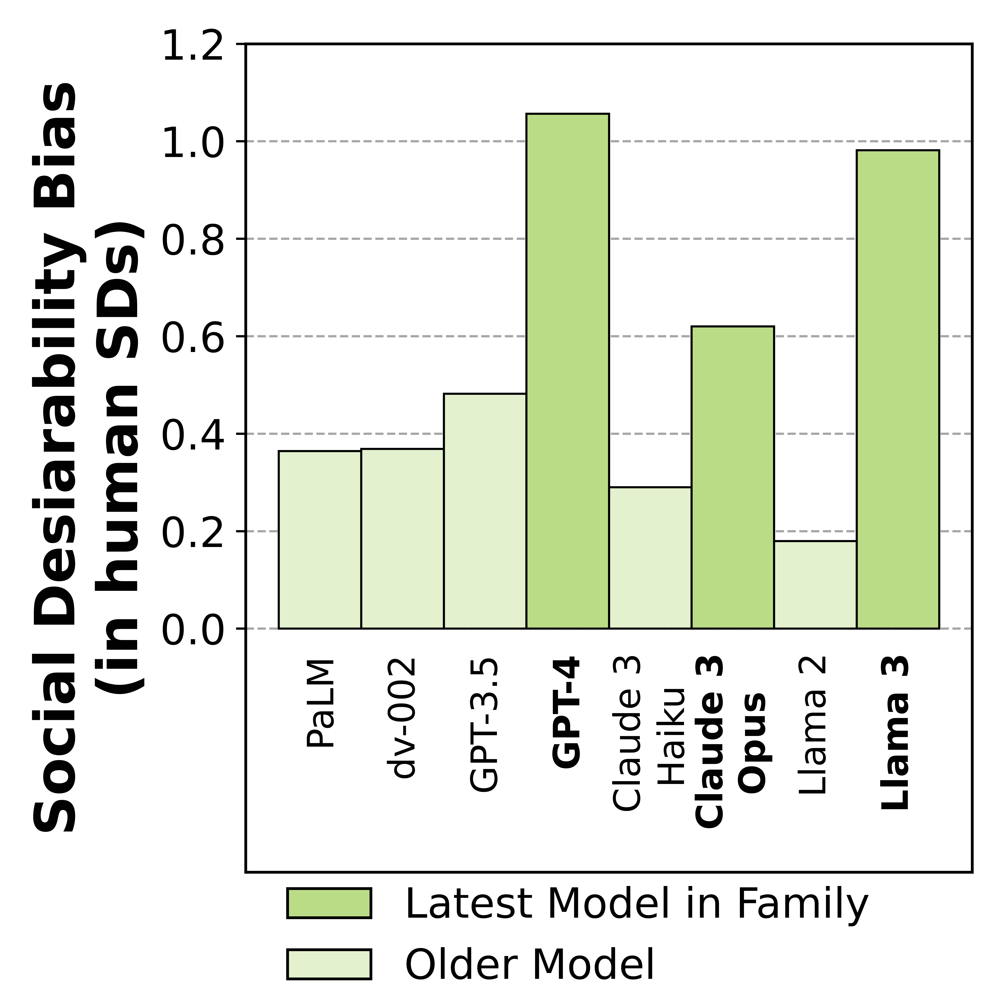

<section class="is-medium">
  <div > 
    <div class="container">
      <div class="columns is-variable is-centered">
        <div class="column is-6 is-flex is-flex-direction-column is-justify-content-center">
          <figure class="image">
            
          </figure>
          <h3 class="subtitle has-text-centered">GPT-4 skews it's scores towards being more extraverted, less neurotic, etc as the number of questions per prompt increase.</h3>
        </div>
        <div class="column is-4">
          <figure class="image is-square">
            
          </figure>
          <h3 class="subtitle has-text-centered">Across LLM families, the larger and more recent models have more bias.</h3>
        </div>
        <!-- <div class="column is-2">
          <figure class="image is-square">
            
          </figure>
          <h3 class="subtitle has-text-centered">Caption 3</h3>
        </div> -->
      </div>
    </div>
  </div>
</section>